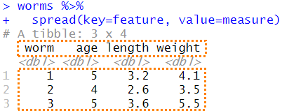

7.4 하나의 컬럼에 복수 개의 변수들이 있는 경우
컬럼들은 한 변수를 나타내는 값들을 담고 있어야 하지만, 종종 복수 개의 변수들이 같은 컬럼에 저장되는 데이터 세트를 종종 접할 때가 있다.
나이(age), 길이(length), 몸무게(weight) 등의 관측치를 한 개의 컬럼에 저장한 곤충(worms)에 대한 데이터 세트를 살펴보기로 한다.
7.4.1 데이터 세트
worms <- read_csv("data7/worms.csv")##
## -- Column specification --------------------------------------------------------
## cols(
## worm = col_double(),
## feature = col_character(),
## measure = col_double()
## )worms## # A tibble: 9 x 3
## worm feature measure
## <dbl> <chr> <dbl>
## 1 1 age 5
## 2 1 length 3.2
## 3 1 weight 4.1
## # ... with 6 more rows
- 곤충에 대한 분석의 단위로 나이(
age)가 길이(length)와 몸무게(weight)를 예측할 수 있는지 알고 싶다. 따라서 각 행은 한 마리의 곤충에 대한 데이터이다. - 여기서는 특성(
feature) 컬럼에 저장되어 있는 3 종류의 데이터 값(age,length,weight)들을 세 개의 컬럼(age,length,weight)으로 확장하고자 한다.
7.4.2 사용할 수 있는 함수의 종류
tidyr패키지의pivot_wider()함수tidyr패키지의spread()함수reshape2패키지의dcast()함수
7.4.3 pivot_wider() 함수
이 문제는 컬럼의 제목들이 실제로 변수의 값이 되어야 할 문제를 pivot_longer() 함수로 해결하였던 앞의 문제와 반대가 되는 상황이다.
여기서는 age, length, 그리고 weight 값들을 컬럼 제목으로 변환하고자 한다.
이러한 반대가 되는 절차에서는 names_from=에 컬럼 제목으로 전환될 컬럼 변수(기존 데이터의 feature 컬럼)를 지정해주고, values_from=에는 새로운 컬럼으로 확장될 값이 저장되어 있는 컬럼(measure)을 지정해 준다.
이 과정을 “wide 형태로 재구성”한다고 말한다.
7.4.3.1 pivot_wider() 함수의 구문
pivot_wider( data, id_cols = NULL, names_from = name, **names_prefix = "“, names_sep =”_“, names_glue = NULL, names_sort = FALSE, names_repair =”check_unique", values_from = value, values_fill = NULL, values_fn = NULL, … )**
주요 인수 :
data: 데이터 프레임id_cols= NULL :names_from=: 컬럼 제목으로 확장해야 할 값을 갖고 있는 컬럼 변수 명values_from=: 확장된 컬럼의 값들로 채워질 값을 저장하고 있는 컬럼 변수 명
7.4.3.2 pivot_wider() 함수의 사용 예
여기에서, 새롭게 만들어지는 테이블의 컬럼 제목의 일부로 feature 변수에 저장되어 있는 값들을 사용할 것이다.
따라서 이 feature 변수를 names_from=에 지정할 것이다.
또한, measure 컬럼에 있는 값들을 새롭게 만들어진 컬럼의 행으로 채울 것이다.
따라서 measure 변수를 values_from=의 값으로 지정할 것이다.
by_worm <- worms %>%
pivot_wider(names_from=feature, values_from=measure)
by_worm## # A tibble: 3 x 4
## worm age length weight
## <dbl> <dbl> <dbl> <dbl>
## 1 1 5 3.2 4.1
## 2 2 4 2.6 3.5
## 3 3 5 3.6 5.5
- 원 테이블(
worm)의feature컬럼이 새로운 테이블(by_worm)의age,length그리고weight컬럼으로 확장되었다. - 이 확장된 컬럼들의 값들은 원 테이블의
measure컬럼의 값들로 채워졌음을 알 수 있다.
7.4.3.3 pivot_wider() 함수의 활용 단계
pivot_wider(names_from=feature, values_from=measure)

7.4.4 spread() 함수
spread() 함수는 gather() 함수의 역함수로서 관측변수를 다시 되돌린다. 그리고 나면 데이터 세트를 ‘wide’ 형식으로 펼치게 된다.
앞의 예에서 사용한 long 형태의 worms 데이터 세트를 wide 형태로 펼쳐 보기로 한다.
7.4.4.1 spread() 함수의 구문
spread(data,
key,
value,
fill = NA,
convert = FALSE,
drop = TRUE,
sep = NULL)
주요 인수
data: spread 할 데이터 세트key: 컬럼 명이나 위치value: 값들의 컬럼 명이나 위치
df %>% spread(key, value)는df %>% pivot_wider(names_from = key, values_from = value)와 같다.
7.4.4.2 spread() 함수의 사용 예
worms %>%
spread(key=feature, value=measure)## # A tibble: 3 x 4
## worm age length weight
## <dbl> <dbl> <dbl> <dbl>
## 1 1 5 3.2 4.1
## 2 2 4 2.6 3.5
## 3 3 5 3.6 5.5
7.4.4.3 spread() 함수의 활용 단계

7.4.5 dcast() 함수
dcast() 함수는 melt() 함수의 역함수로서 관측변수를 다시 되돌린다. 그리고 나면 데이터 세트를 ‘wide’ 형식으로 펼치게 된다.
앞의 예에서 사용한 long 형태의 worms 데이터 세트를 wide 형태로 펼쳐 보기로 한다.
7.4.5.1 dcast() 함수의 구문
dcast( data, formula, fun.aggregate = NULL, …, margins = NULL, subset = NULL, fill = NULL, drop = TRUE, value.var = guess_value(data) )
주요 인수
data: melt 되어 있는 데이터 프레임formula: 재구성 공식value.var: 값을 저장하고 있는 컬럼 명
7.4.5.2 dcast() 함수의 사용 예
worms %>%
dcast(worm ~ feature, value.var="measure")## worm age length weight
## 1 1 5 3.2 4.1
## 2 2 4 2.6 3.5
## 3 3 5 3.6 5.5# or
worms %>%
dcast(worm ~ ...)## Using measure as value column: use value.var to override.## worm age length weight
## 1 1 5 3.2 4.1
## 2 2 4 2.6 3.5
## 3 3 5 3.6 5.57.4.5.3 dcast() 함수의 활용 단계

7.4.5.4 dcast() 함수를 이용한 aggregation
7.4.5.4.1 Chickweight 데이터 세트
Chickweight 데이터 세트를 보면, 578개의 행과 Weight, Time, Chick, Diet라는 4개의 열(Column)로 이루어져 있다.
(? datasets::ChickWeight로 자세한 내용을 확인할 수 있다.)
Weight: 각 Chick(병아리)들의 무게Time: 무게를 잴 때의 병아리 나이(부화한 후의 날 수) 1일~21일Chick: 1~50번까지의 병아리 번호Diet: 병아리에게 투여한 모이 종류 1~4가지
#Chick weight example
head(ChickWeight)## Grouped Data: weight ~ Time | Chick
## weight Time Chick Diet
## 1 42 0 1 1
## 2 51 2 1 1
## 3 59 4 1 1
## 4 64 6 1 1
## 5 76 8 1 1
## 6 93 10 1 1str(ChickWeight)## Classes 'nfnGroupedData', 'nfGroupedData', 'groupedData' and 'data.frame': 578 obs. of 4 variables:
## $ weight: num 42 51 59 64 76 93 106 125 149 171 ...
## $ Time : num 0 2 4 6 8 10 12 14 16 18 ...
## $ Chick : Ord.factor w/ 50 levels "18"<"16"<"15"<..: 15 15 15 15 15 15 15 15 15 15 ...
## $ Diet : Factor w/ 4 levels "1","2","3","4": 1 1 1 1 1 1 1 1 1 1 ...
## - attr(*, "formula")=Class 'formula' language weight ~ Time | Chick
## .. ..- attr(*, ".Environment")=<environment: R_EmptyEnv>
## - attr(*, "outer")=Class 'formula' language ~Diet
## .. ..- attr(*, ".Environment")=<environment: R_EmptyEnv>
## - attr(*, "labels")=List of 2
## ..$ x: chr "Time"
## ..$ y: chr "Body weight"
## - attr(*, "units")=List of 2
## ..$ x: chr "(days)"
## ..$ y: chr "(gm)"7.4.5.5 melt() 함수의 사용
names(ChickWeight) <- tolower(names(ChickWeight))
chick_m <- melt(ChickWeight, id=2:4, na.rm=TRUE)
head(chick_m)## time chick diet variable value
## 1 0 1 1 weight 42
## 2 2 1 1 weight 51
## 3 4 1 1 weight 59
## 4 6 1 1 weight 64
## 5 8 1 1 weight 76
## 6 10 1 1 weight 93tail(chick_m)## time chick diet variable value
## 573 12 50 4 weight 155
## 574 14 50 4 weight 175
## 575 16 50 4 weight 205
## 576 18 50 4 weight 234
## 577 20 50 4 weight 264
## 578 21 50 4 weight 2647.4.5.6 dcast() 함수의 사용
dcast(chick_m, time ~ variable, mean) # average effect of time## time weight
## 1 0 41.06000
## 2 2 49.22000
## 3 4 59.95918
## 4 6 74.30612
## 5 8 91.24490
## 6 10 107.83673
## 7 12 129.24490
## 8 14 143.81250
## 9 16 168.08511
## 10 18 190.19149
## 11 20 209.71739
## 12 21 218.68889dcast(chick_m, diet ~ variable, mean) # average effect of diet## diet weight
## 1 1 102.6455
## 2 2 122.6167
## 3 3 142.9500
## 4 4 135.2627acast(chick_m, diet ~ time, mean) # average effect of diet & time## 0 2 4 6 8 10 12 14 16
## 1 41.4 47.25 56.47368 66.78947 79.68421 93.05263 108.5263 123.3889 144.6471
## 2 40.7 49.40 59.80000 75.40000 91.70000 108.50000 131.3000 141.9000 164.7000
## 3 40.8 50.40 62.20000 77.90000 98.40000 117.10000 144.4000 164.5000 197.4000
## 4 41.0 51.80 64.50000 83.90000 105.60000 126.00000 151.4000 161.8000 182.0000
## 18 20 21
## 1 158.9412 170.4118 177.7500
## 2 187.7000 205.6000 214.7000
## 3 233.1000 258.9000 270.3000
## 4 202.9000 233.8889 238.5556dcast(chick_m, diet ~ time, mean)## diet 0 2 4 6 8 10 12 14
## 1 1 41.4 47.25 56.47368 66.78947 79.68421 93.05263 108.5263 123.3889
## 2 2 40.7 49.40 59.80000 75.40000 91.70000 108.50000 131.3000 141.9000
## 3 3 40.8 50.40 62.20000 77.90000 98.40000 117.10000 144.4000 164.5000
## 4 4 41.0 51.80 64.50000 83.90000 105.60000 126.00000 151.4000 161.8000
## 16 18 20 21
## 1 144.6471 158.9412 170.4118 177.7500
## 2 164.7000 187.7000 205.6000 214.7000
## 3 197.4000 233.1000 258.9000 270.3000
## 4 182.0000 202.9000 233.8889 238.5556